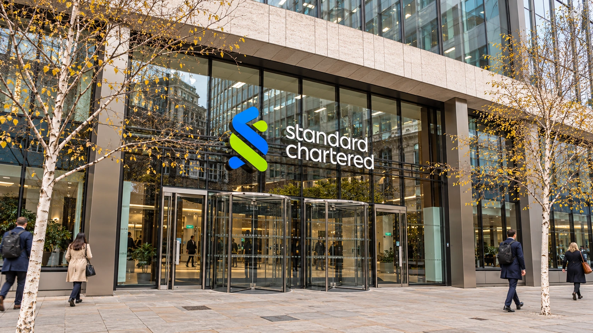

Standard Chartered Raises Outlook as Wealth and Trading Lift Profit
The bank reported $2.25 billion in quarterly pretax profit. Stronger fees and lower credit charges helped it lift its full-year income outlook.

Standard Chartered raised its full-year income outlook on Wednesday after stronger wealth-management and trading activity helped third-quarter pretax profit reach $2.25 billion. The London-listed international bank now expects income growth above its previous 5% to 7% range, measured at constant exchange rates and excluding specified notable items. It targets a full-year return on tangible equity of around 14%.
The change gives investors something more substantial than a backward-looking earnings increase: management expects the stronger performance to carry into its annual results. Reuters reported that the bank's Hong Kong-listed shares rose 8% after the announcement. That was a reported trading-session move, rather than a closing price or a forecast of further gains.
Standard Chartered serves businesses and individuals across markets including Asia, Africa and the Middle East. Its results offer a different view of financial activity from a lender concentrated on American households. The main development this quarter was the contribution from client services alongside lending, with implications for how dependent future earnings will be on interest rates.
Fees provided a second engine for growth
The bank's release showed non-interest income of approximately $2.8 billion, up 19%, with Wealth Solutions income increasing 26% and Global Markets income rising 21%. Its comparison uses constant currencies unless otherwise stated. Investment products and insurance distribution supported wealth revenue, while market activity supported the trading businesses. These figures describe revenue growth; they are not returns earned by wealth-management customers.
That distinction matters because banks earn money in several ways. Lending produces interest income, while investment distribution, advice and transaction services can generate fees. Trading desks can earn revenue when clients adjust exposures. These businesses respond differently to economic conditions. A more active market can create demand for transactions even when the direction of asset prices makes some clients more cautious.
Our coverage of HSBC's latest results shows why comparing banks requires more than checking whether profit rose. Expectations, the source of revenue and the durability of customer activity can produce different market reactions. For Standard Chartered, the growth in fees provides a specific operating measure to follow after Wednesday's upgraded outlook.
Credit charges also helped the bottom line
The financial statement reports $90 million of credit impairment, compared with $188 million a year earlier. A $24 million net release in Corporate & Investment Banking partly offset a $114 million charge in Wealth & Retail Banking. The improvement therefore includes an accounting reassessment of expected losses, alongside the expansion in customer-facing revenue.
A release reduces the amount of previously recognized protection against lending losses. It can improve current profit without representing a new stream of fees or interest. Reading the impairment line separately helps distinguish operating growth from changes in the expected collectability of existing loans. Neither contribution should be ignored, but they do not necessarily repeat at the same rate.
On the reported basis in the financial statement, pretax profit increased 27% and operating income rose 13% to $5.781 billion. The release's higher growth comparisons reflect constant-currency calculations. Our earnings guide explains why keeping the measurement basis consistent matters when comparing a company's headline with its detailed accounts.
A stronger quarter does not remove the capital constraint
Quarterly return on tangible equity reached 15.7%, compared with 10.5% a year earlier, according to the statement. That quarterly measure is separate from the around-14% target for the whole of 2026. The bank also reported a common equity Tier 1 capital ratio of 13.8%, down 31 basis points from the preceding quarter, while underlying customer lending expanded.
For shareholders, the practical test is whether the bank can sustain fee activity and contain expenses while funding that lending growth. Capital supports the risks on the balance sheet; it is not interchangeable with quarterly revenue. The next results will show how much of the improvement survives changes in client trading, credit charges and funding conditions. Wednesday's outlook upgrade raises the earnings benchmark against which that performance will be judged.
Standard Chartered share chart on TradingView ↗
Sources and methodology
Sources checked October 28, 2026. Company statements and reported findings are attributed in the text. Explanations of financial and operational implications are TTN editorial analysis.